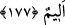
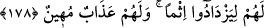
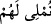

zikredilmesi, münâfıkların inkârının artık son raddeye geldiğine ve nihâyet Erhamü’r-
Râhimîn’in bu münâfıklara rahmetinden pay ayırmamayı irade ettiğine işâret etmektedir.
Rahmetten tamamen mahrûm kalmalarının yanı sıra onlar için sevap yerine, akla
hayâle gelmeyecek kadar büyük bir azap vardır.
177. Şurası muhakkak ki, îmanı verip inkârı alanlar, Allah’a hiçbir zarar
veremezler. Onlar için elîm bir azap vardır.
“Îmân karşılığında inkârı satın alanlar”; Bıraktıklarından yüz çevirip aldıklarına
rağbet ederek îman karşılığında inkârı alanlar, “Allah’a hiçbir zarar veremezler. Onlar
için elem verici bir azap vardır.” Normal olarak, bir malı satın alan kişi, yaptığı alış
verişin kârlı olması durumunda bundan memnûn kalıp o malı elde ettiği için sevindiği;
alış verişte zarar etmesi durumunda ise, elem duyduğu için, bunlara verilen azap da bu
duruma uygun olsun diye, elem verici olmakla vasfedilmiştir.
178. İnkâr edenler sanmasınlar ki, kendilerine mühlet vermemiz onlar için daha
hayırlıdır. Onlara ancak günahlarını arttırmaları için fırsat veriyoruz. Onlar için
alçaltıcı bir azap vardır.
Âyetteki (  ) “kendilerine mühlet vermemiz” -ya da “kendilerine verdiğimiz
mühlet”,- iradelerinin yok edilmesinden; yani öldürülmelerinden daha hayırlıdır.”
Buradaki üstünlük de kendi iddiâlarına göredir.
Ömrü uzatmak demek olan mühlet verilmesinin Allah’ın fiillerinden olduğu ve onlar
için hayır olmadığı da âşikârdır. Çünkü kendilerine biraz daha yaşama hakkı verilince,
günah ve tuğyânlarını artıracaklardır.
Kâfirlere iradesiyle ömürlerini uzatıp mühlet veren ve bu suretle küfür, tuğyan türü
günahlar işlemelerine imkân veren Allah Teâlâ olunca, bu sayılan günahların hâlıkı da
Allah olmuş olur. Günahlar ise ancak irade ile yaratılır. Öyle ise neticede bu günahlara
sebebiyet veren şeyleri irade eden Allah Teâlâ olduğu gibi, bizzat bu günahları dileyen
de O’dur. Burda geçen “lâm”, hükmün illetini gösteren “lâm-ı illet” değildir. Çünkü
Allah Teâlâ’nın fiilleri birtakım maksatlarla illetlendirilemez. Mûtezile mezhebine göre
ise bu lâm, lâm-ı âkıbettir. Yani onların günahlarını artırmalarının, Allah’ın mühlet